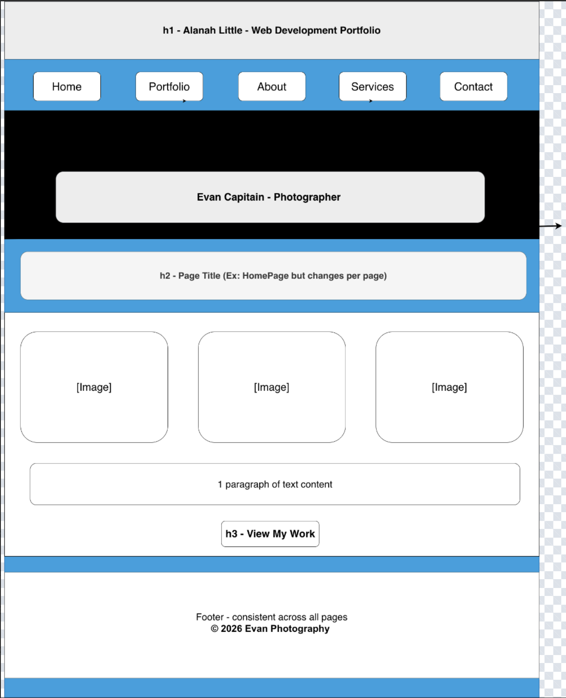
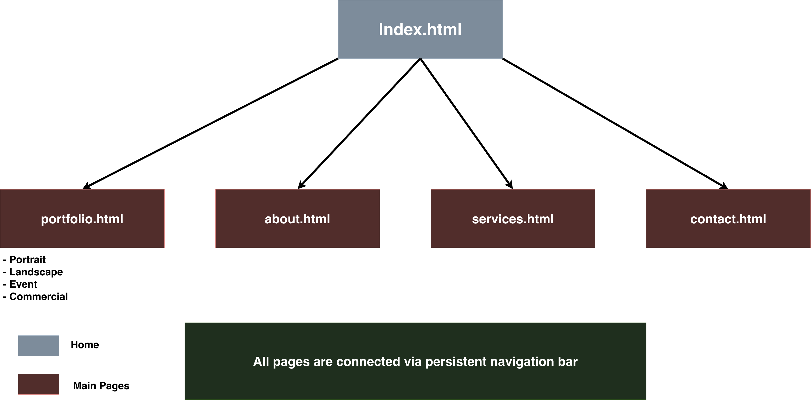

Project Overview
Project Name
Lens & Light – Evan's Photography Portfolio
Project Overview
Application and Purpose
Lens & Light is a professional photography portfolio website designed for freelance photographer Evan Capitain. The site's primary function is to present his photography work in a clean, browsable format organized by specialty, allowing potential clients to evaluate his skill and style before making contact. A secondary function is to streamline the client inquiry process through an integrated contact and booking form. Currently, Evan promotes his work informally through social media, which limits his professional visibility and makes it difficult for clients to find pricing or service information. This site solves that problem by centralizing everything in one polished, accessible web presence.
Intended Users
- Prospective clients — individuals or businesses looking to hire a photographer for portrait sessions, events, landscape commissions, or commercial shoots.
- Event coordinators and vendors — planners, venues, and other professionals who may refer Evan to their own clients.
- Casual visitors and photography enthusiasts — people who appreciate photography and want to browse his work without an immediate intention to book.
- Evan himself — as the owner, he will share the URL as his primary professional web presence.
Overview of Website Content
- A hero landing section with Evan's name, tagline, and a featured photograph.
- A filterable photo gallery organized into four categories: Portraits, Landscapes, Events, and Commercial (10–15 photos each).
- A biographical "About" page covering Evan's background, photography style, and equipment.
- A services and pricing page listing available photography packages with starting prices.
- A contact and booking page with an inquiry form, an embedded Google Map of his service area, and social media links.
Client Information
- Name: Evan Capitain
- Organization / Business: Independent Freelance Photographer
- Email: himevan@gmail.com
- Phone: [private]
Wireframe
The wireframe below illustrates the default page layout shared across all five pages of the site. It was created using Draw.io connected to a UNCC Google Drive account.

Site Map
The site contains five pages all connected through a persistent navigation bar. Every page links directly to every other page via the nav. The portfolio gallery additionally contains internal jQuery filter controls that sub-divide content by category without navigating away from the page.

Page Design
Individual design specifications are provided below for each of the five pages listed in the site map.
Page 1 — index.html (Home)
- Purpose: Introduce visitors to Evan's brand, create a strong first impression, and guide users toward the portfolio or contact page.
- Audience: All visitors — prospective clients, photography enthusiasts, and referrals.
- Content: Full-width hero image with Evan's name and tagline; brief introductory paragraph; a grid of three to four featured photos; two call-to-action buttons.
- User Data Entry: No.
- Validation: None.
- Buttons / Links: "View Portfolio" → portfolio.html; "Get in Touch" → contact.html; full navigation bar linking all five pages.
- Actions: Clicking a featured image opens a jQuery UI lightbox overlay. Clicking CTA buttons navigates to the respective page.
- Notes: Hero image and featured photos supplied by Evan. Scroll-reveal animation applied to the featured image grid using jQuery.
Page 2 — portfolio.html (Gallery)
- Purpose: Display Evan's photography work in a filterable grid so visitors can browse by category.
- Audience: Prospective clients and photography enthusiasts.
- Content: 10–15 images per category (Portraits, Landscapes, Events, Commercial). Filter buttons above the grid. Each image has a title and category tag.
- User Data Entry: No form fields. Filter buttons are interactive controls.
- Validation: None.
- Buttons / Links: Filter buttons — All | Portraits | Landscapes | Events | Commercial. Each thumbnail is clickable to open the lightbox.
- Actions: Clicking a filter shows only matching images via jQuery without reloading the page. Clicking a thumbnail opens a jQuery UI Dialog lightbox with a larger image and caption.
- Notes: Image metadata (title, category, date) is loaded dynamically via AJAX from a local photos.json file on page load. Images stored in an images/ subfolder organized by category.
Page 3 — about.html (About Evan)
- Purpose: Build trust with prospective clients by sharing Evan's background, photography philosophy, and experience.
- Audience: Prospective clients researching the photographer before booking.
- Content: Professional headshot, biography paragraph, years of experience, notable events covered, and gear/equipment section.
- User Data Entry: No.
- Validation: None.
- Buttons / Links: One CTA link — "Work with Evan →" navigating to contact.html.
- Actions: jQuery UI Accordion expands and collapses the gear list (Cameras, Lenses, Lighting) when a panel heading is clicked.
- Notes: Headshot and bio text will be provided directly by Evan.
Page 4 — services.html (Services & Pricing)
- Purpose: Outline photography packages and starting prices so visitors can determine fit before contacting Evan.
- Audience: Prospective clients with intent to book.
- Content: Four service cards — Portrait Sessions, Event Coverage, Landscape Commissions, Commercial Shoots — each listing deliverables and a starting price range.
- User Data Entry: No. This is a read-only page.
- Validation: None.
- Buttons / Links: Each service card has a "Book This Package" button linking to contact.html with the service name passed as a URL query parameter.
- Actions: jQuery UI Tabs organize four packages into tabbed panels. JavaScript on contact.html reads the query parameter and pre-selects the matching Service dropdown option. Card hover effects reveal a short description overlay.
- Notes: Exact pricing will be confirmed with Evan before the final build.
Page 5 — contact.html (Contact & Booking)
- Purpose: Allow prospective clients to send an inquiry or booking request to Evan.
- Audience: Any visitor wishing to hire or contact Evan.
- Content: Contact form, Evan's display email address, embedded Google Map of his service area, and social media icon links.
- User Data Entry: Yes.
- Name (text, required)
- Email (email, required)
- Phone (text, optional)
- Service of Interest (dropdown: Portrait | Event | Landscape | Commercial | Other)
- Preferred Date (date picker, required)
- Message (text area, required)
- Validation:
- Name — required, non-empty.
- Email — required, must match email format via jQuery Validate regex check.
- Message — required, minimum 20 characters.
- Preferred Date — must be a future date.
- Invalid fields are highlighted in red with inline helper text.
- Buttons / Links: "Send Message" submit button; "Reset" button to clear fields; Instagram and Facebook icon links.
- Actions: On valid submission, jQuery Validate triggers an AJAX POST to Formspree. A success or error message is injected into the DOM without a page reload. jQuery UI Datepicker is applied to the date field. The Service dropdown is pre-selected if the page was reached via a "Book This Package" link.
- Notes: Formspree handles server-side email delivery, keeping the project within read/submit-only operations as required by the course guidelines.
Dynamic Functionality
1. Filterable Photo Gallery — portfolio.html
- Description: Category filter buttons use jQuery to show or hide image cards by comparing a
data-categoryattribute on each card to the selected filter value. - Purpose: Allows visitors to quickly narrow the gallery to the category most relevant to their needs without reloading the page, improving the browsing experience.
- Example URLs:
2. Lightbox Image Viewer — portfolio.html, index.html
- Description: Clicking any thumbnail opens a jQuery UI Dialog overlay displaying an enlarged version of the image along with its title and capture date. The dialog closes on Escape or via a close button.
- Purpose: Provides a focused viewing experience without navigating away from the gallery, keeping users engaged on the same page.
- Example URLs:
3. AJAX Image Metadata Load — portfolio.html
- Description: On page load,
$.getJSON()fetches a localphotos.jsonfile containing each image's filename, title, category, and date. The gallery grid is then built dynamically from this data rather than being hard-coded in HTML. - Purpose: Separates content from markup, making the portfolio easy to update by editing only the JSON file. This also satisfies the AJAX functionality requirement for the course.
- Example URLs:
4. Contact Form Validation & AJAX Submission — contact.html
- Description: The jQuery Validate plugin enforces all field rules client-side before submission. On a valid form,
$.ajax()POSTs the serialized data to Formspree. A success or error message is then injected into the page without a full reload. - Purpose: Ensures Evan only receives complete, properly formatted inquiries, and provides users with immediate visual confirmation that their message was sent successfully.
- Example URLs:
5. Accordion Equipment List — about.html
- Description: A jQuery UI Accordion widget organizes Evan's gear into three collapsible panels (Cameras, Lenses, Lighting). Only one panel is expanded at a time.
- Purpose: Keeps the About page visually clean while making detailed equipment information available for clients who want to verify professional-grade gear before booking.
- Example URLs:
6. Tabbed Services Layout — services.html
- Description: jQuery UI Tabs divide the services page into four panels (Portrait, Event, Landscape, Commercial). Clicking a tab reveals that panel's content without reloading the page.
- Purpose: Prevents information overload by showing only the relevant package details at a time, improving readability and helping prospective clients focus on the service they need.
- Example URLs: